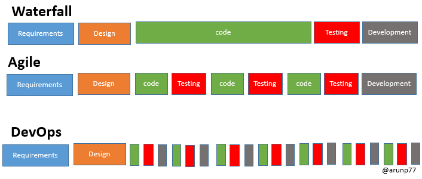

Software Development Methodologies in System Engineering
Overview
In system engineering, selecting the right development methodology is important for successful project delivery, operational efficiency, and long-term maintainability. Different methodologies offer different strengths depending on project complexity, stakeholder involvement, timelines, and change requirements.
This document provides an overview of three widely used methodologies:
- Waterfall
- Agile
- DevOps

1. Waterfall Methodology
Definition
The Waterfall model is a traditional and linear software development approach. It follows a sequential process where each phase must be completed before moving to the next stage.
Purpose
Phased Development
The project is divided into clear stages:
- Requirements Gathering
- Design
- Implementation
- Testing
- Deployment
- Maintenance
Predictability
Because each phase is planned in advance, Waterfall offers a structured and predictable framework for managing projects.
Minimal Client Involvement
Client interaction usually happens:
- At the beginning (requirements phase)
- At the end (delivery phase)
Challenges
Rigidity
Once a phase is completed, making changes can be difficult and expensive.
Delayed Feedback
Problems often appear late during testing, which may delay corrections.
2. Agile Methodology
Definition
Agile is an iterative and incremental approach to software development that focuses on flexibility, speed, and continuous improvement.
Purpose
Iterative Development
Software is delivered in smaller functional parts through short cycles called iterations or sprints.
Adaptability
Agile supports changing requirements, even during later stages of development.
Customer Collaboration
Frequent communication with clients and stakeholders is a core principle.
Challenges
Resource Intensive
Continuous meetings, planning, and collaboration may require more team involvement.
Limited Documentation
Less formal documentation can create difficulties in large or highly regulated projects.
3. DevOps Methodology
Definition
DevOps is a culture and engineering practice that combines software development and IT operations to improve delivery speed, reliability, and automation.
Purpose
Collaboration
Encourages close coordination between:
- Development teams
- Operations teams
- QA teams
- Security teams
- Business stakeholders
Automation
Uses CI/CD pipelines to automate:
- Build processes
- Testing
- Deployment
- Infrastructure provisioning
Continuous Monitoring
Applications and infrastructure are continuously monitored for faster issue detection and recovery.
Challenges
Cultural Shift
Requires breaking silos between traditionally separate teams.
Learning Curve
New tools, cloud platforms, and automation frameworks may require training.
Comparison Table
| Criteria | Waterfall | Agile | DevOps |
|---|---|---|---|
| Adaptability | Resistant to changes after project start | Embraces changing requirements | Handles changes through automation |
| Customer Involvement | Limited involvement | Continuous collaboration | Cross-functional stakeholder collaboration |
| Release Frequency | End of project | Frequent incremental releases | Continuous delivery |
| Documentation | High | Moderate / Low | Moderate |
| Speed | Slower | Faster | Fastest with automation |
| Best For | Fixed-scope projects | Dynamic projects | Scalable cloud operations |
Relevance to System Engineering
In system engineering environments, methodology selection depends on infrastructure maturity, compliance needs, operational complexity, and delivery goals.
Waterfall is suitable for:
- Satellite systems
- Government contracts
- Hardware-integrated systems
- Highly regulated environments
Agile is suitable for:
- Application development
- Analytics platforms
- Internal tools
- Data products
DevOps is suitable for:
- Cloud infrastructure
- CI/CD pipelines
- Monitoring systems
- Automated deployments
- Scalable production systems
Practical Approach
Modern organizations often use hybrid models:
- Waterfall for long-term planning
- Agile for development execution
- DevOps for deployment and operations
This combination provides both structure and flexibility.
Conclusion
Each methodology serves a different purpose:
- Waterfall offers planning and predictability
- Agile provides flexibility and faster feedback
- DevOps improves collaboration, automation, and continuous delivery
For system engineering work, the best approach often combines elements of all three depending on project needs, technical constraints, and operational goals.